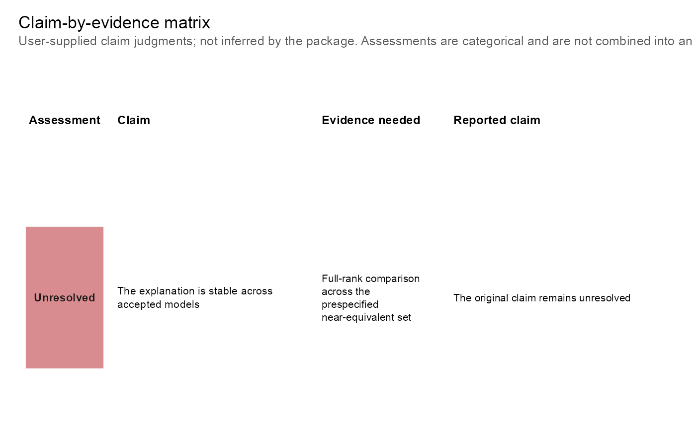

Draws an accessible table-like plot with explicit status text and the selected package visual style. Colors reinforce, but do not replace, the status labels.
Usage
csdg_plot_claim_matrix(
x,
title = "Claim-by-evidence matrix",
subtitle = paste("User-supplied claim judgments; not inferred by the package.",
"Assessments are categorical and are not combined into an overall score."),
claim_width = 34L,
evidence_width = 22L,
conclusion_width = 48L,
base_size = 11,
style = c("color", "monochrome")
)Arguments
- x
A
CSDGClaimMatrixreturned bycsdg_claim_matrix().- title
Plot title.
- subtitle
Plot subtitle.
- claim_width
Approximate character width used to wrap the claim column.
- evidence_width
Approximate character width used to wrap the evidence column.
- conclusion_width
Approximate character width used to wrap the conclusion column.
- base_size
Base text size in points.
- style
Either
"color"for the default blue-red rendering or"monochrome"for an achromatic print-oriented rendering.
Examples
claims = csdg_claim_matrix(
claim = "The explanation is stable across accepted models",
evidence_needed = "Full-rank comparison across the prespecified near-equivalent set",
conclusion = "The original claim remains unresolved",
status = "unresolved"
)
csdg_plot_claim_matrix(claims)
